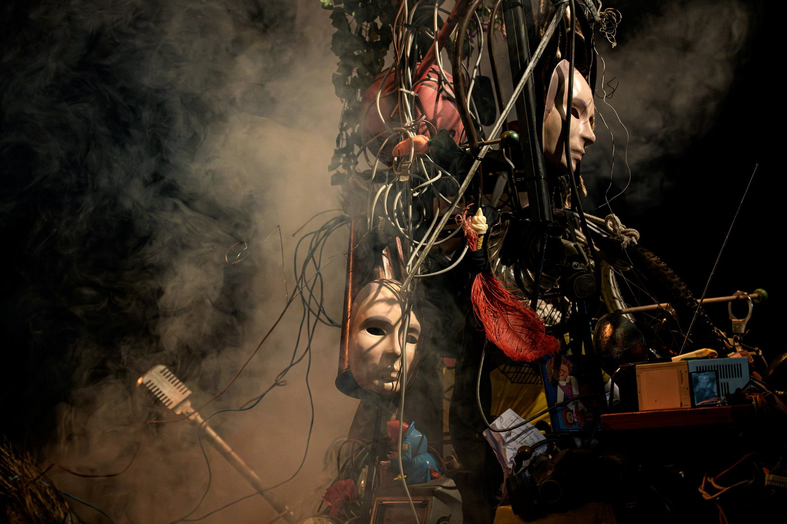

STOPERA! — Sonic Theatre Opera Performance

OOO
→
- Jeanne Crousaud
- Olivia Martin
- Rut Schreiner
- Emma Terno
- Valentín Pelisch
- Daniel Zea
- Géraldine Kosiak
- Bastien Roblot
- Alex Nadzarov
- Jean-Cyrille Burdet
- Anne-Laure Chamboisier
- Nicola Beller Carbone
- Léo Warynski
- Martin Bauer
- Antoine Gindt
- Les Métaboles
- Ensemble intercontemporain
- Ensemble Multilatéral
- Êkheía
- Camille Rivière
- Hélène Dubreuil
- Marc Lasserre
- Claire Vasseur
- Thomas Berger
- Antoine Lemoine
- Éditions La Croch'
LIPS
« Un opéra qui libère la parole féminine. »
Le Monde — Otages
« La voix inoubliable des oubliés. »
Laura Plas, La Terrasse — Aliados
« Le livret s'avère d'une grande richesse, en prise avec notre époque. »
Forum Opéra — Otages
- Le Monde
- Diapason
- ResMusica
- Forum Opéra
- Concertclassic
- Classykéo
- Hémisphères Son
- La Terrasse
- L'Humanité
- AFP
- La Stampa
- The Times
- El País
- El Mundo
- Scherzo
- Clarín
- La Nación
- Página/12
8 rue Victor Hugo, 94250 Gentilly (Val-de-Marne), France